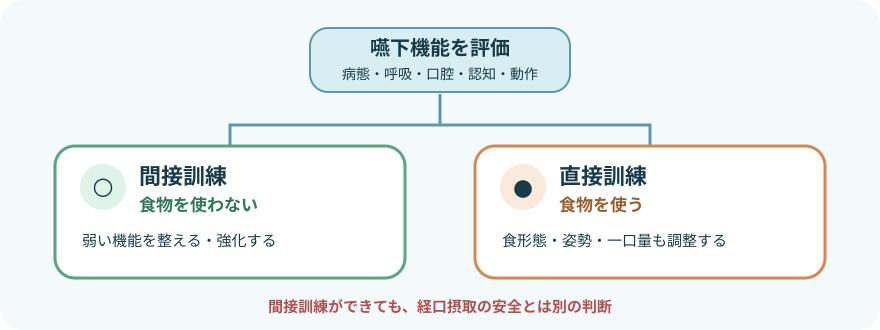
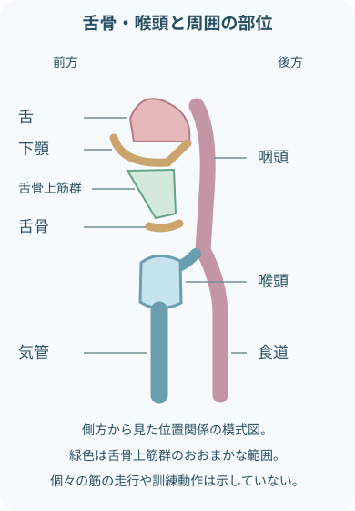
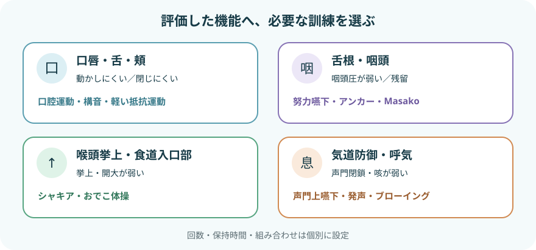
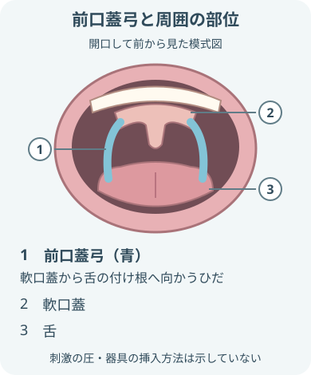
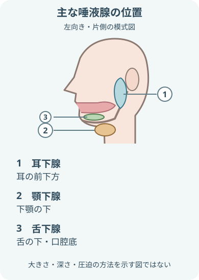
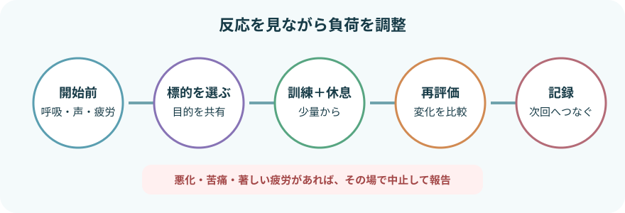

間接訓練は「食物を使わない」

- 間接訓練は比較的リスクが低いが、疲労や呼吸状態を見ずに一律に行うものではない。
- 直接訓練への移行は別に判断する。
- 訓練で整える機能の例
- 姿勢
- 口唇
- 舌
- 頬
- 咽頭
- 喉頭挙上
- 気道防御
- 評価で選んだ、嚥下を支える機能へ働きかける。
- 対象：食物を使う練習がまだ難しい人だけでなく、直接訓練と組み合わせて特定の機能を強化したい人
- 限界：訓練中にむせなくても、食物・水分を安全に飲み込めるとは限らない
始める前の評価
「今日できる状態か」を先に見る
- 参加できる状態
- 覚醒
- 指示理解
- 表情
- 疲労
- 訓練への同意
- 呼吸・分泌物処理
- 呼吸数
- 呼吸困難
- SpO₂
- 痰
- 咳の強さ
- 湿性嗄声
- 口腔内と運動機能
- 口腔内の乾燥
- 口腔内の汚染
- 疼痛
- 出血
- 義歯
- 舌の動き
- 口唇の動き
- 負荷に影響する病歴・状態
- 頸部疾患
- 術後
- 放射線治療歴
- 心肺疾患
- 血圧変動
- 評価で推定された障害部位と、この訓練で狙う機能
- 開始前に整えること
- 口腔ケア
- 安楽な座位
- 必要時：吸引
- 必要時：酸素
状態と指示に合わせ、訓練前に整える。
- 負荷をかける訓練を始めない状態
- 指示に従えない
- 全身状態が不安定
- 分泌物を処理できない
- 上記の状態では、負荷をかける訓練を開始しない。
- 訓練の可否を再評価する。
弱い機能から訓練を選ぶ

- 舌骨上筋群は舌骨の挙上を支える筋群。
- 嚥下では舌骨・喉頭の動きが協調する。
- 喉頭は気管へ、咽頭は食道へ続く。食道は気管より後方にある。
- 位置関係を理解する図で、訓練の適応や効果を一対一で決めるものではない。

- 同じ「飲み込みにくい」でも標的は異なる。
- 複数を漫然と組み合わせず、評価した機能へ必要な負荷を選ぶ。
- 効果の根拠は訓練・疾患・対象者によって差がある。
- 回数や保持時間は固定せず、評価した専門職が個別に設定する。
準備運動・口腔機能の訓練
頸部・肩部の運動
- 評価に合わせて選ぶ準備運動
- 肩の挙上
- 肩の回旋
- 頸部の前後屈
- 頸部の側屈
- 頸部の回旋
体幹を安定させ、痛みのない範囲でゆっくり行う。
- 強い頸部の伸展・回旋を避ける状態
- 頸椎疾患
- めまい
- 術後
- 頸部血管病変のリスク
これらがある人へ、強い伸展や回旋を行わない。
顎・口唇・舌・頬の運動
- 評価に合わせて選ぶ口腔運動
- 開閉口
- 口唇を閉じる
- 口唇をすぼめる
- 口唇を横へ引く
- 舌を前後左右へ動かす
- 頬を膨らませる
- 動作を確認する項目
- 可動域
- 左右差
- 速度
- 疲労
反応を見ながら、必要時は軽い抵抗を加える。
- 痛みや顎関節音が増える負荷は中止する。
構音・発声、咳
- 「パ・タ・カ」などの発音は口唇・舌の動きと呼気を確認しやすい。
- 声門閉鎖・排痰能力を観察する動作
- 発声
- 随意咳
- ハフィング
- これらの動作で声門閉鎖を観察する。
- 排痰能力の観察にもなる。
- 長時間の大声や息こらえで、嗄声・めまい・呼吸苦を起こさない。
Think swallow（嚥下の意識化）
- 注意を向ける対象
- 口腔内の唾液
- 舌の位置
- 飲み込む合図
これらへ注意を向け、意識して空嚥下する。
- 食物を用いると直接訓練になるため、摂食条件の確認が必要になる。
専門評価をもとに行う代表的訓練

- 前口蓋弓は、軟口蓋から舌の付け根へ向かう左右のひだ。
- 部位を理解する図。
- 刺激の方法・強さは、専門評価と個別の手順に従う。
冷刺激・アイスマッサージ
- 冷却した綿棒などで前口蓋弓周囲を刺激し、空嚥下を促す方法。
- 冷刺激前の確認
- 口腔内の感覚
- 粘膜
- 認知
- 感染対策
- 氷片を口に含む「氷なめ」とは誤嚥リスクが異なり、安易に置き換えない。
- 長期的に嚥下反射を改善する効果は明確ではない。
シャキア訓練（頭部挙上訓練）・嚥下おでこ体操
- 舌骨上筋群へ負荷をかけ、舌骨・喉頭の挙上と食道入口部の開大を狙う。
- シャキア訓練は仰臥位で肩を床につけたまま頭を上げる。
- おでこ体操は額と手で押し合う。
- 負荷設定の確認
- 頸部痛
- 心肺負荷
- 血圧
- 疲労
回数・保持時間は個別に処方する。
声門上嚥下・声門内転訓練・ブローイング
- 息こらえ、嚥下、咳払いを組み合わせる声門上嚥下は、嚥下中の気道閉鎖を補う手技。
- 声門内転訓練や吹く練習も、喉頭閉鎖・呼気・鼻咽腔閉鎖など評価した標的に合わせる。
- 心疾患・呼吸器疾患では強い息こらえによる負荷へ注意する。
アンカー強調嚥下・努力嚥下
- 舌を口蓋へ強く押しつけるなどして、舌根部や咽頭の圧を高めることを狙う。
- 避ける負荷・反応
- 力み過ぎ
- 疲労
- 顎の痛み
- 舌の痛み
舌前方保持嚥下法（Masako手技）
- 舌先を前歯で軽く保持して空嚥下し、咽頭後壁の運動を促す。
- 食塊を保持・送り込む力が低下するため、食物や水分を使って行わない。
- 乾燥・粘膜損傷にも注意する。
口腔機能維持と唾液腺マッサージ

- 主な唾液腺は左右に一対ずつある。
- 片側の位置関係を示している。
- 位置を理解する図であり、押す場所・強さ・回数の指示ではない。
- 口腔機能を維持するケア
- 口腔清掃
- 保湿
- 義歯管理
- 会話
- 口腔運動
廃用と乾燥を防ぎ、訓練しやすい環境をつくる。
- 耳下腺・顎下腺・舌下腺周囲のやさしいマッサージは唾液分泌を促す目的で用いられるが、嚥下の安全性を直接証明する訓練ではない。
マッサージの可否を確認する状態・部位
- 腫脹
- 発赤
- 強い痛み
- 急性炎症
- 腫瘍部位
- 術後部位
- 放射線治療部位
これらがある場合は、実施前に可否を確認する。
1回の訓練を安全に組み立てる

- 開始前の基準を取る開始前に確認
- 覚醒
- 呼吸
- SpO₂
- 声
- 唾液処理
- 疼痛
- 疲労
- 今日の標的を共有する訓練で狙う機能の例
- 舌の動き
- 喉頭挙上
- 目的と方法を短く説明する。
- 少量から実施し、休む実施中の確認
- 動作の正確さ
- 代償運動
- 呼吸
- 表情
反応を見て、セット間に休息を入れる。
- 終了後に同じ項目を再評価する負荷を見直す変化
- 声の悪化
- 呼吸の悪化
- 疲労
- 疼痛
- 上記の変化があれば、次回の負荷を下げる。
- 必要時に報告する。
中止して報告するサイン
「食べていないから安全」と決めつけない
- 中止・報告：呼吸・循環
- 新しい呼吸困難
- SpO₂低下
- チアノーゼ
- 胸痛
- 動悸
- 中止・報告：唾液・分泌物
- 唾液で続く咳
- 湿性嗄声の出現
- 湿性嗄声の増悪
- 分泌物を処理できない
- 中止・報告：全身の変化
- めまい
- 冷汗
- 失神しそうな感覚
- 強い頭痛
- 中止・報告：疼痛・損傷
- 強い頸部痛
- 強い顎の痛み
- 強い舌の痛み
- 口腔内出血
- 神経症状
- 中止・報告：参加状態
- 覚醒低下
- 指示理解の低下
- 著しい疲労
- 拒否
報告・記録
- 実施前の状態
- 覚醒
- 呼吸
- SpO₂
- 声
- 唾液処理
- 口腔内
- 疼痛
- 疲労
- 実施内容
- 訓練の標的
- 方法
- 姿勢
- 回数
- 保持時間
- 休息
- 介助量
- 動作・参加状況
- 動作の正確さ
- 左右差
- 代償運動
- 理解
- 自発性
- 実施中・後の反応
- 咳
- 湿性嗄声
- 呼吸変化
- 疼痛
- めまい
- 疲労
- 中止・調整と今後の方針
- 中止理由
- 報告先
- 負荷調整
- 多職種で決めた次の方針
出典
- Shaw SM, et al. Architecture of the Suprahyoid Muscles: A Volumetric Musculoaponeurotic Analysis. 2017.
- NCI SEER Training「Pharynx & Esophagus」— 咽頭・食道と気管の位置関係
- NCI SEER Training「Introduction to Head & Neck Cancer」— 咽頭・喉頭の部位
- 日本摂食嚥下リハビリテーション学会「訓練法のまとめ（2014版）」
- 日本摂食嚥下リハビリテーション学会 eラーニング「間接訓練の概念」
- 日本摂食嚥下リハビリテーション学会 eラーニング「咽頭期に関する間接訓練」
- 日本耳鼻咽喉科頭頸部外科学会「嚥下障害診療ガイドライン 2024年版」
- 日本耳鼻咽喉科頭頸部外科学会「口腔がん治療後のリハビリテーション」
- 米国国立がん研究所（NCI）SEER「Abstracting Keys：中咽頭の解剖学的範囲」
- 米国国立歯科・頭蓋顔面研究所（NIDCR）「Saliva & Salivary Gland Disorders」
- Logemann JA, et al. A randomized study comparing the Shaker exercise with traditional therapy. Dysphagia. 2009.